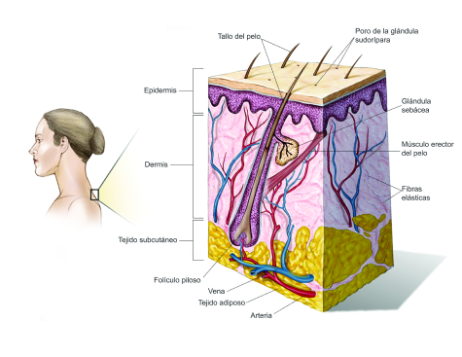

Cáncer de Piel
La piel es el órgano más grande del cuerpo. La piel tiene varias capas, pero las dos principales
son la epidermis (capa superior o externa) y la dermis (capa inferior o interna).
1.Células escamosas: Células delgadas y planas que forman la capa superior de la epidermis.
2.Células basales: Células redondeadas que están debajo de las células escamosas.
3.Melanocitos: Células que producen melanina y que se encuentran en la parte inferior de la
epidermis. La melanina es el pigmento que le da color a la piel. Cuando se expone la piel al
sol, los melanocitos producen más pigmento y hacen que la piel se oscurezca.

Los carcinomas de células basales y de células escamosas son dos de los tipos más comunes de cáncer
de piel. Comienzan, respectivamente, en las capas basales y escamosas de la piel. Por lo general,
ambos se pueden curar, pero pueden desfigurar y ser muy costosos de tratar.
El melanoma, el tercer tipo de cáncer de piel más común, comienza en los melanocitos. De todos los
tipos de cáncer de piel, el melanoma causa la mayoría de las muertes, debido a su tendencia a
propagarse a otras partes del cuerpo, incluidos los órganos vitales.La mayoría de los casos de
cáncer de piel son provocados por la exposición excesiva a los rayos ultravioleta (UV) del sol, las
camas bronceadoras o las lámparas solares. Los rayos UV pueden causar daño a las células de la piel.
A corto plazo, este daño puede provocar una quemadura solar. Con el tiempo, el daño de los rayos UV
se acumula, causando cambios en la textura de la piel, envejecimiento prematuro de la piel y, a
veces, cáncer de piel. Los rayos UV también se han vinculado a afecciones de los ojos, como
cataratas.